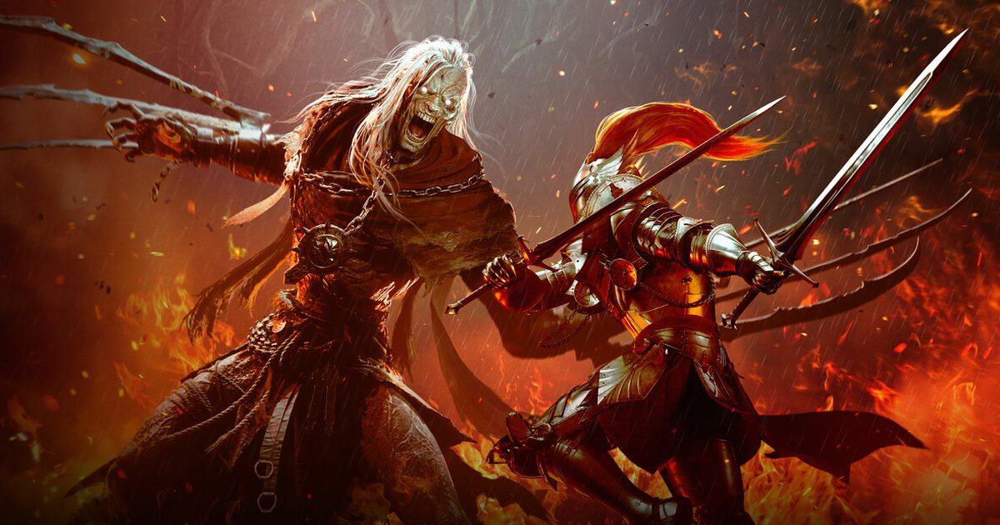

2026-10-26 · 形态深读
NEXON 基于《洛奇英雄传》IP 打造的动作 RPG《Vindictus: Defying Fate》公布了发售窗口：2027 年，先上 Steam（PC），主机版排在其后。支持简体中文，UE5 开发，主打硬核近战、闪避格挡与 Boss 战，主线是单人战役，同时保留最多 4 人联机共斗。 真正让这条消息变味的，是另外半句：本体免费，付费内容聚焦外观。 一款宣称要「重塑单机硬核体验」的动作 RPG，最后选择不卖钱。

原作《洛奇英雄传》是 2010 年问世的 MMO（韩服原名 Mabinogi Heroes，海外叫 Vindictus），以硬核近战、Boss 战和差异化角色著称，国服由世纪天成代理。新作沿用同一世界观和凯尔特神话底色，但官方说得很明确：它不是续作，而是一款以单机体验为主、持续更新的动作 RPG。
战斗机制基本是从原作搬过来的那套：闪避与格挡结合技能；在 Boss 攻击的瞬间完成格挡或回避可以触发特殊反击；敌人倒地后可发动强力终结攻击；轻重攻击衍生多种连招。此外支持中途切换角色、4 人联机与 AI 队友。
首发可操作角色四位：双剑的利斯塔、剑盾的菲欧娜、半巨人卡鲁（战柱）、王女黛莉娅（双手剑可蓄力重击）。原作人气很高的魔法少女伊菲与魔剑士艾莉莎仍在开发中——艾莉莎的设定被单独拎出来讲过：右手挥舞注入魔力的「魔刃」近战，左手用「魂器」释放魔法，开发总监称这是他最喜爱的角色设计之一。
场景方面已公布罗切斯特这座可逛的商贸城市（教堂、街景、广场），有 NPC 对战与场景机关交互；库汉村（Colhen）则是新手出生点兼核心枢纽，接任务、打造装备、推进主线都在这里。本周官方还公布了一位已实装的全新 NPC，定位是库汉村杂货店的店员，姓名和背景暂未公开。
把这条时间线拉直，你会发现它跳了三次，而且方向并不连贯：
问题就出在第三级。「免费 + 内购」「多人共斗」「章节式更新」「持续加入角色」这四件事，没有一件是单机作品的特征。 它们合在一起描述的是一款标准的长线运营产品。真正从第二级跳里被保留下来的，只剩「主线是单人战役」这一条。
所以玩家社区里那句质疑——「这都免费了还是单机吗？该不会后面还有卖强化保护石吧」——不是 paranoid，是在读结构。 一套需要长期留存的商业模型，天然需要数值追求，数值追求天然指向付费。「外观付费」这四个字是这套话术的软垫，它解决的是今天的舆论，不是明年的商业模式。
这里有一个非常锋利的对照，而且它是同一家公司做出来的。
2025 年 3 月 27 日，Neople 开发、NEXON 发行的《第一狂战士：卡赞》发售。它是《地下城与勇士》IP 的单机化衍生作，UE5，定价 59.99 美元，Steam 上约 3.3 万条评价、好评率 85%，八个月内销量破百万、累计营收超过 5000 万美元。 换句话说，NEXON 在 2025 年刚刚亲手证明过：网游 IP 做买断单机动作游戏，是能卖出去的，而且能卖得很好。
18 个月后，同一家公司把《洛奇英雄传》这个 IP 做成了免费。
这个反差不能用「行业趋势」解释——趋势就在 NEXON 自己的财报里。只能用一个更朴素的理由解释：NEXON 判断《洛奇英雄传》的用户盘子撑不起 59.99 美元，而《DNF》撑得起。 免费不是让利，是把「卖不卖得动」这个不确定性整个转嫁掉。它的代价也很清楚：一旦免费，你就失去了用价格筛选玩家、用首发销量宣告成功的资格，剩下的唯一指标是留存和付费率——恰恰是这套结构最容易被质疑的地方。
| 作品 | 原型 | 转型方向 | 商业模式 | 结果 |
|---|---|---|---|---|
| 碧蓝幻想 Relink | 页游 / 手游 IP | 单机动作 RPG + 4 人联机 | 买断 $59.99 | 11 天全球百万，两年后追加大型 DLC |
| 第一狂战士：卡赞 | DNF（2005 网游） | 单机硬核 ARPG | 买断 $59.99 | 8 个月破百万份、营收超 5000 万美元，好评 85% |
| 洛奇英雄传：反抗命运 | 2010 年 MMO | 单机战役 + 4 人共斗 | 免费 + 外观付费 | 2027 待验 |
| 洛奇英雄传（原作） | — | MMORPG | 免费 + 内购 | 运营十余年，靠外观与强化体系长线变现 |
把这张表从上往下读，结论几乎会自己跳出来：同样是「网游 IP 做单机」，前面两款卖 59.99 美元都成了，第三款退回免费。 《碧蓝幻想 Relink》那一条还有个附加信息值得留意——Cygames 原本计划在三次免费更新后结束项目，是玩家「希望继续玩下去」的声浪把它改成了长期更新，两年后还出了大型 DLC。 也就是说，买断也能长出第二生命周期，而且是从玩家那儿长出来的。这恰恰说明「免费 + 持续运营」并不是唯一出路。
我们的观察 · 沿用早期怪物，是一顶戴上去就摘不掉的帽子
从已公布的素材看，本作在角色、招式、怪物设计上大量沿用《洛奇英雄传》早期的内容。好处很直接：老玩家一眼认出，情怀直接变现。 但坏处更隐蔽：一旦「高清怀旧重制」这顶帽子戴上，玩家就不会再用新作的标准评价它，而会用「2010 年那套好不好玩」来评价。 对一个宣称「现代化改造」的项目，这是致命的评价坐标系错位——你做得越像原作，越会被说成炒冷饭；你改得越多，又会被说成不尊重原作。这条路两头都是墙。
我们的观点 · 库汉村那个新 NPC，是一次「证明我还活着」的公告
这条新闻很容易被当成凑数：一款 2027 年才发售的游戏，官方郑重宣布「一位未公布姓名的杂货店 NPC 已实装」。 但它其实是个信号。2027 年发售，2026 年 10 月还在放 NPC 概念图，中间这一年多的空窗必须靠不断的小公告来填。 这类公告的任务不是传达信息，是维持存在感——它在对玩家和市场说：项目没黄，还在动。真正需要警惕的是哪天这类公告停了。
我们的观察 · 主机排在 PC 之后，对一款靠打击感吃饭的游戏是个隐患
官方计划 2027 年先上 Steam，主机版排在其后。对硬核动作游戏来说，手柄不是可选项，是核心体验的一半——闪避与瞬时格挡的手感，键鼠和手柄完全是两套东西。 而 Steam 页面目前写的是「Partial Controller Support（部分手柄支持）」。先 PC 后主机，意味着它要先用键鼠交第一份答卷。如果首发口碑被操作适配拖累，主机版再好也救不回来。
我们的观点 · 角色阵容本身就是态度
首发四位全是原作早期角色，伊菲和艾莉莎还在开发，官方承诺发售后「持续加入经典角色与全新原创角色」。 这句话翻过来读就是：它的内容量是从原作的角色池里往外掏，而不是新建。 DNF 的《卡赞》之所以能立住，是因为它讲了一个原作里没人讲过的角色故事；洛奇英雄传这四位如果还是原作那四套手感，玩家的兴奋点会止于「回来了」，而不是「新了」。 掏完原作池之后能不能靠原创角色接上，是这个项目真正的分水岭——而那一天至少还有两年。
我们的实验 · 一个可以自己验的判据
等 2027 年上线，我们建议做这样一个测试：用利斯塔打第一个 Boss，记录你前十次死亡里，有几次能立刻说出自己是怎么死的。 硬核动作游戏的全部尊严都压在这个比例上——能说清死因，说明战斗是可读的、是「我错了」；说不清，说明它只是难，而且是把难当成了深度。 《洛奇英雄传》原作当年能立住，靠的就是这个可读性。新作能不能继承，跟 UE5 画面好不好没有一点关系。
我们的评分
说到底，《洛奇英雄传：反抗命运》最值得琢磨的不是它是什么，而是它不是什么。 它本来有机会成为 NEXON 在《卡赞》之后的第二张买断单机牌，一张能证明「老 MMO IP 也能在现代单机市场卖出价」的牌。 现在它选了另一条路：不要首发销量，不要定价权，只要尽可能多的下载量。 这条路没错，只是它意味着——NEXON 自己，也没打算把它当成《卡赞》那一类作品来看待。